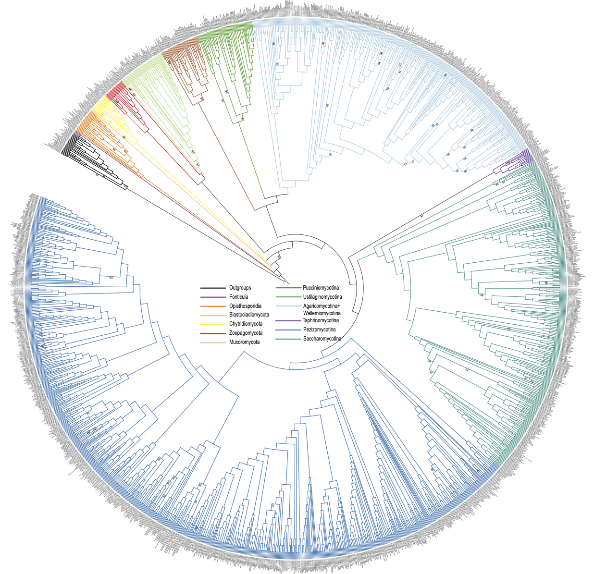

Diversity of eukaryotics is far greater than most people realize. In the Yuanning-Li lab, we are trying to use DNA records to study patterns and process of eukaryotic evolution on different time scales and with different types of genomic information. Combining a molecular systematic and/or genomic approach with information from organismal evolution has proved a powerful approach to study everything from the origin of major eukaryotic lineages (especially for marine invertebrates and fungi) to the recent adaptation to deep-sea chemosynthetic environments. Research in the lab focuses on utilizing computational approaches and genome-scale data to gain insight into molecular phylogenetics, evolutionary biology, comparative genomics, and bioinformatics.